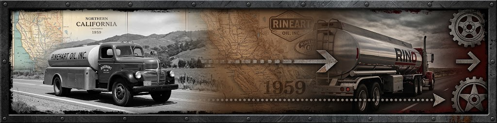

FAMILY OWNED. ROAD PROVEN.
Our Story.
Founded in Ukiah in 1959. Today, Rinehart’s focus is hauling fuel for other businesses.

Generations Of Getting It Done.
Robert F. Rinehart started his career in the oil industry as a retail salesman with Richfield Oil Company in 1953. He relocated his family to Ukiah, California in 1956 when he accepted a promotion with Richfield to become an area wholesale manager. In 1959 he purchased the Richfield bulk plant in Ukiah and became a consignee for Richfield.
Robert F. Rinehart founded the business in 1959 after beginning his oil-industry career in 1953. His son Reed now owns and operates Rinehart Oil.
The work has evolved. Honesty, integrity, reliability, operational excellence and customer focus remain the principles behind the company.

Read Our Company History
In 1962 the Richfield warehouse, office and bulk plant burned to the ground in a fire that destroyed the entire facility and business. Bob ultimately rebuilt the warehouse and office and continued with Richfield until 1964 when he struck a deal to purchase Walter Heady's Wilshire Jobber-ship in Ukiah. In a courageous move he transferred his Richfield customers over to the Wilshire brand and became Rinehart Oil, an independent oil marketer. Bob continued to operate the business under a number of different brands including Richfield, Wilshire, Gulf, Mohawk, Phillips 66, Mobil, BP, Texaco and 76. The business and location he purchased from Mr. Heady in 1964 is still the corporate headquarters for Rinehart Oil, Inc. today. Bob retired from Rinehart Oil, Inc. and the oil business in 1997, after a 46-year career. His son Reed now owns and operates the business Bob Rinehart founded in 1959.
Robert F. Rinehart started his career in the oil industry as a retail salesman with Richfield Oil Company in 1953. He relocated his family to Ukiah, California in 1956 when he accepted a promotion with Richfield to become an area wholesale manager. In 1959 he purchased the Richfield bulk plant in Ukiah and became a consignee for Richfield. In 1962 the Richfield warehouse, office and bulk plant burned to the ground in a fire that destroyed the entire facility and business. Bob ultimately rebuilt the warehouse and office and continued with Richfield until 1964 when he struck a deal to purchase Walter Heady's Wilshire Jobber-ship in Ukiah. In a courageous move he transferred his Richfield customers over to the Wilshire brand and became Rinehart Oil, an independent oil marketer. Bob continued to operate the business under a number of different brands including Richfield, Wilshire, Gulf, Mohawk, Phillips 66, Mobil, BP, Texaco and 76. The business and location he purchased from Mr. Heady in 1964 is still the corporate headquarters for Rinehart Oil, Inc. today. Bob retired from Rinehart Oil, Inc. and the oil business in 1997, after a 46-year career. His son Reed now owns and operates the business Bob Rinehart founded in 1959.